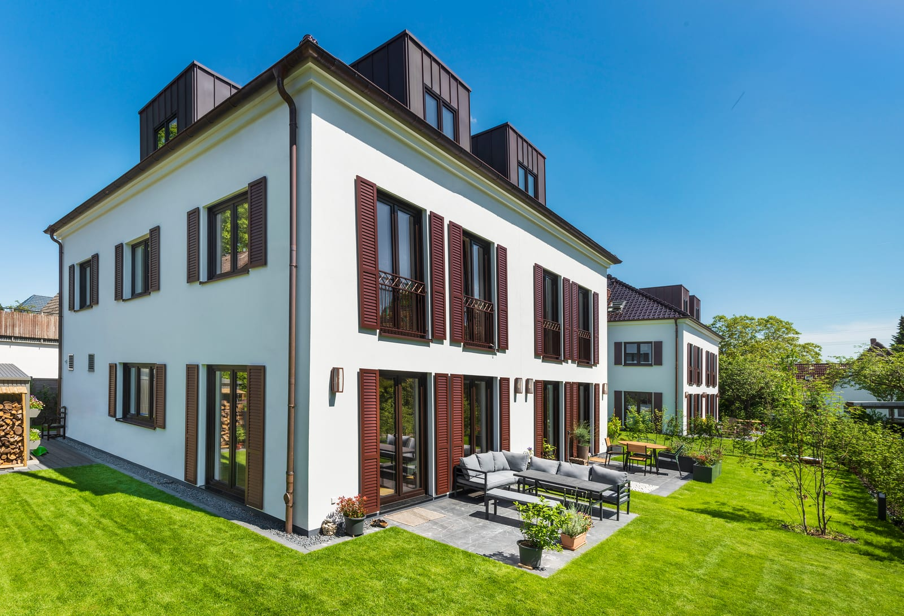

Breyer Wohnbau
Referenzen
Einblicke in unsere bisherigen Wohnbauprojekte.

Fertiggestellt & verkauft
FH 22
Im Projekt FH 22 haben wir zwei Einfamilienhäuser realisiert. Beide Häuser sind fertiggestellt und verkauft.

Fertiggestellt & verkauft
HAW 39
Im Projekt HAW 39 haben wir ein Haus mit zwei Wohneinheiten realisiert. Das Projekt ist fertiggestellt und verkauft.

Fertiggestellt & verkauft
BB 69
Im Projekt BB 69 haben wir zwei Doppelhäuser mit insgesamt vier Doppelhaushälften realisiert. Das Projekt ist fertiggestellt und verkauft.

Fertiggestellt & verkauft
WA 24
Im Projekt WA 24 haben wir zwei Doppelhäuser im Stil der klassischen Kaffeemühle mit insgesamt vier Wohneinheiten realisiert. Das Projekt ist fertiggestellt und verkauft.

Fertiggestellt & verkauft
SW 9
Im Projekt SW 9 haben wir ein Mehrfamilienhaus mit sechs Wohneinheiten realisiert. Das Projekt ist fertiggestellt und verkauft.

Fertiggestellt & verkauft
GB 24
Im Projekt GB 24 haben wir eine Doppelhaushälfte im vorderen Grundstücksbereich und ein Einfamilienhaus im hinteren Bereich realisiert. Das Projekt ist fertiggestellt und verkauft.